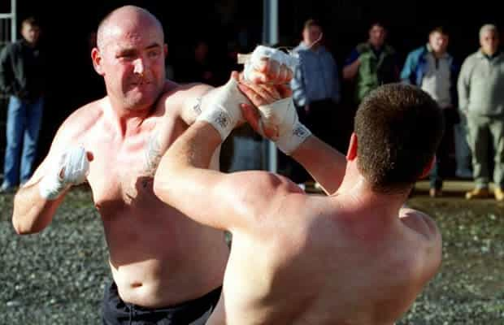

< < < Back
Men Benefit From Acting Potentially Violent And Explosive Around Women – Return Of Kings
The idea that women are attracted to bad boys typically has a lot to do with the feeling that these bad boys would be willing to use or have used physical force in expressing their badness. Oftentimes there may be no direct proof of violence, only the imputation: they’re a member of a gang, they angrily called up someone they didn’t like over a girl, or confronted them aggressively on the street. Nonetheless, the association itself, when harnessed and disseminated, is powerful enough to attract a large percentage of the young and fertile female population.
Feminists and women in general will deny it, but the bad boy fantasy has the most unavoidable evolutionary roots. The civil, nice guy was only going to provide a safe life in groups where a strong collection of laws and social mores prevented violence. Most of the time, these hamlets were non-existent or very short-lived.
Irrespective of whether he killed innocents, maimed them or stole what wasn’t his, the capable violent man enabled more than just a semblance of security and material comfort for a fertile woman. Surrounded by concrete jungles, the image still has significant appeal today, regardless of what our rational minds say.
It is your job to be seen as potentially violent and explosive, without the regular drawbacks of spending time in prison, getting badly beaten up by five other guys, or some other event you don’t particularly want to experience. The trick is to combine this perceived willingness to retaliate or strike out with a focused, measured, and successful life in multiple areas.
It is entirely possible to combine these primal and professional spheres together. And what’s more, women respond sexually to either and you can have the best of both worlds.
Give the image, without the negative consequences

The overarching reason guys like Jeremy Meeks attract women is due to their association with violence or possible violence, hence the “bad boy” tag. Working as a bank clerk, his appeal would be 1% of what it is with his criminal record, with or without his baby blues and cheekbones.
There’s a distinction here, as you can see, between being violent and acting potentially violent around women and others. For those of you looking to carve out careers in medicine, law, engineering or the business world, plus a host of other industries, engaging in unprovoked attacks, however morally justified, is not going to get you far. The damage to your professional standing almost always far outweighs the extra poontang you might score on the side (unless you have aspirations to be a professional criminal).
The best part is that many women will not discern a real difference between you being potentially violent and you standing up for yourself and not apologizing. Standing up for and not apologizing for yourself takes many forms. Standing up for yourself is usually reactive, as a result of what someone has done or said and the aptness of your response. Not apologizing for yourself is basically just how you generally behave. Do you apologize, for example, for taking up space on a sidewalk or do you own that space plus some more?
Try some examples of your own
For time immemorial, men feared by other men or associated with violence, however true or not true, have been immortalized by countless women. Bikers, mafioso, and ghetto gangstas have this in common.
When you walk in large cities, you might notice the propensity of people, especially young women, not to move around you when you’re walking towards one another. Sometimes they will deliberately try and cut you off, expecting you’ll concede space. Don’t. Aside from those with infirmities, the elderly or parents with young children, plough through.
The best cases are the groups of three or four walking in line with another so that almost no one can pass them. Last month, one middle-aged woman on the end refused to make way and fall behind her colleagues. Oh well, my bag ran into her. And it hurt. Too bad for her.
When you’re with your girl, a female target or just female friends, try things like this out. There’s a time and place for etiquette and politeness but at least 90% of the time, barring those with mobility issues, it isn’t on the streets you walk. I also (calmly) confront those who blow tobacco smoke in my face accidentally, half- or full-daring them to try again (depending on whether I’m being sarcastic or plain condescending).
Rather than being a staged action, it’s who I am, someone utterly repulsed by cigarette fumes. I would do the same thing alone or with a girl. And if it weren’t due to social conditioning, those of you not doing it would be doing it. The context is more like becoming who you really are, rather than what society has demanded you be: the timid, ball-less gentleman.
I am going to suggest to you that making retaliatory or wisecracking comments to abrasive males in the projects of Detroit or the Bronx, or the non-tourist suburbs of Moscow, is maybe not worth the effort (or the dental bill). Likewise, hyperaggressive attitudes in women will become a turnoff, because they’re either masks for deep insecurity or a sign of severe emotional imbalance.
It is your responsibility not to tip the ship over and to modulate your approach to maximize the two-headed hydra of a primal male who has professional and other success.
Protect your interests and others’

Combative attitudes, expressed in different ways, attract women.
Did someone badly crash into you or, better yet, your friend on the street or somewhere else? Tell them to apologize. People usually stare at such actions, instead of calling them out. Be the one who does. Especially in clear moral instances, such as when I see a group making fun of a single individual, exploding (in a way you control, even if others don’t see it), frequently reaps sexual dividends. The effect on your personality down the track with other girls, leading to more dividends still, is particularly important. And don’t confuse pussified white knighting with anything like this.
Remember, though, balance is key. Truly violent men, through a combination of their life-limiting rap sheets, social stigma and lack of focus, rarely realize more than a fraction of their potential. As their body decays after their youth, they’re mostly left with nothing good materially or sexually. You must be the proverbial hawk of your own life, your eyes keenly aware of the symbiotic relationship between the potentially violent man who stands up for himself and the effective man who gets shit done in the rest of his life.
Always recall that secret no woman will admit: men seen as potentially violent make most of them wet.
Read More: Why Are American Women Acting Like Men?